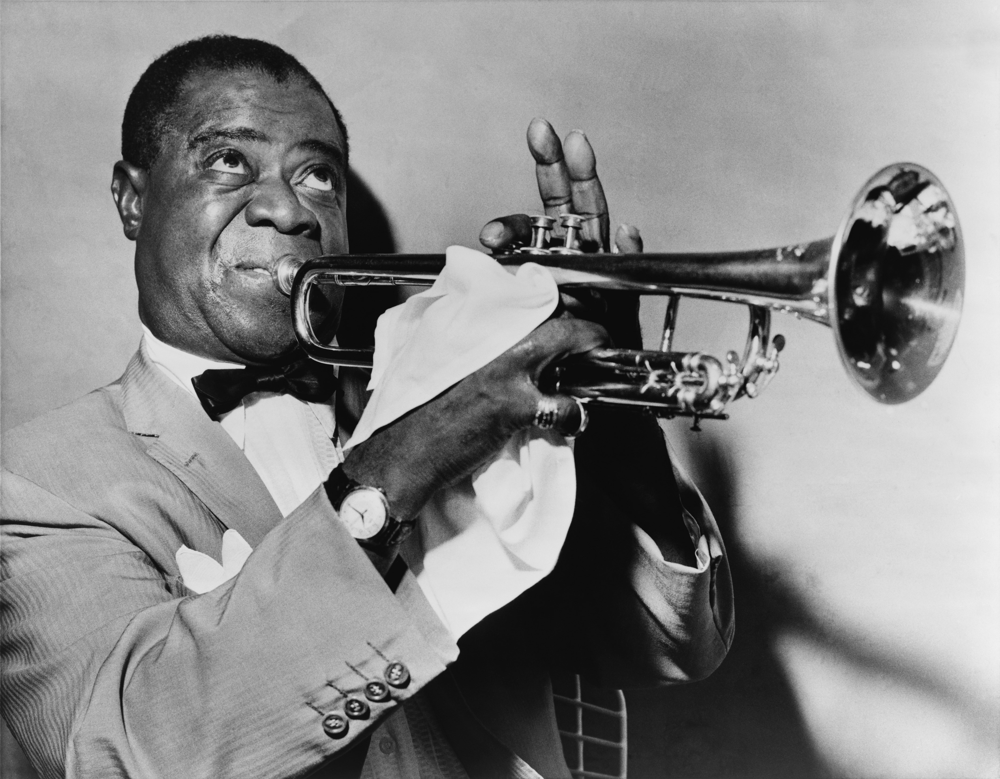
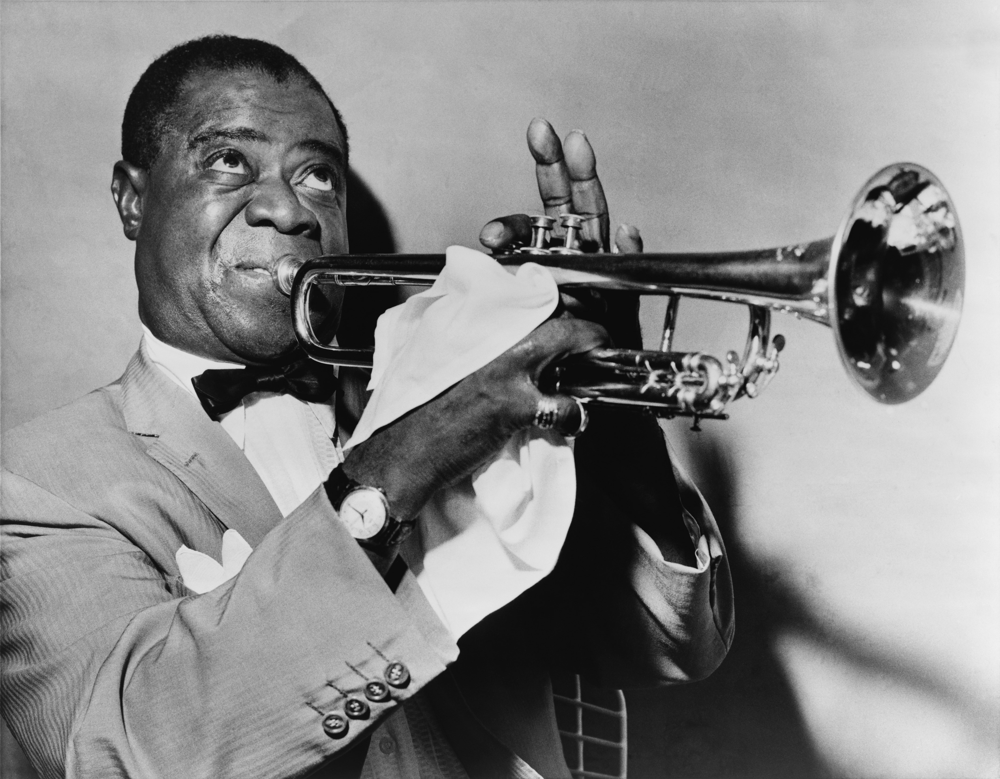

♫ The Hills Are Alive ♩♪
The Sound of Music
Music Transcends Time
Music has been a huge part of
human history for thousands of years and can be categorized in
time periods due to this fact. The styles of music change over
time and represents the cultural sentiment at the time. Some
notable time periods include: Ancient Greek and Christian Rome,
Middle Ages, Renaissance, Baroque Period, Classical Period,
Nineteenth-Century Music, and Twentieth-Century Music.
In 1877, Thomas Edison patented the first method for recorded phonograph cylinders. The cylinders were generally made from wax and were susceptible to wear and tear. The evolution of recording sound can be classified as waves. The first wave is the the 'Acoustic Era' (1877-1925), the second wave is the the 'Electrica Era' (1925-1945), the third wave is the the 'Magnetic Era' (1945-1975), and the fourth wave is the 'Digital Era' (1975 - Present).
In 1877, Thomas Edison patented the first method for recorded phonograph cylinders. The cylinders were generally made from wax and were susceptible to wear and tear. The evolution of recording sound can be classified as waves. The first wave is the the 'Acoustic Era' (1877-1925), the second wave is the the 'Electrica Era' (1925-1945), the third wave is the the 'Magnetic Era' (1945-1975), and the fourth wave is the 'Digital Era' (1975 - Present).
Talkin' Blues
Blues originated in the southern
parts of the United States around the 1860's. It is a style of
music that is heavily influenced by African cultures. It is
characterized by a call-and-response pattern, baselines, and
instrumentals. It is thought that the term Blues
originated from "blue devils", which means melancholy and
sadness.
Rock n' Roll
Rock and Roll began in the United
States around the late 1940's and early 1950's. It has origins
from other genres of music such as, jazz, rhythm and blues,
gospel, and country music. In early rock and roll music, the
piano or saxophone was usually the lead instrument. Over time,
guitars began to make more of a presence and replace other
instruments as the lead.
Hip Hop and You Don't Stop
Hip Hop originated in the Bronx in
the early 1970's. It is characterized by a rhythmic beat
accompanied by rapping. Many tracks sample a beat or a baseline
from other records and infuse them with a hip hop style of
music. Technically, Hip Hop refers to the subculture consisting
of four elements: rapping, scratching, break dancing, and street
art. In 2017, Hip Hop was the most popular music genre in the
United States.
Music Awards
Music awards are given to artists,
producers, song writers and such to celebrate and show
appreciation for the contributions they made to the industry.
There are many different awards that a musician can potentially
win, Some notable awards are the Grammys Awards, American Music
Awards, MTV Video Music Awards, and the Billboard Music Awards.
Currently, Beyoncé holds the record for the most Grammy Award
wins with a total of 32 trophies under her belt.
Trouble in the Industry
Advancements in the digital era of
sound have changed the way we listen to and produce music. With
these technological advances came new areas of concern for those
in the music industry. Piracy has always been a big concern, but
with music now being saved as digital files it has become easier
to copy and mass produce media illegally. This was evident with
Napster in 2001. The problem still remains today, and many
record labels struggle to turn a profit due to low record sales.
Nowadays, the numbers of plays on streaming services are being
used to compensate for low album sales.

 
